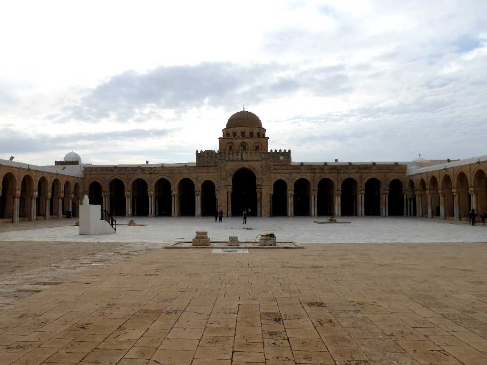
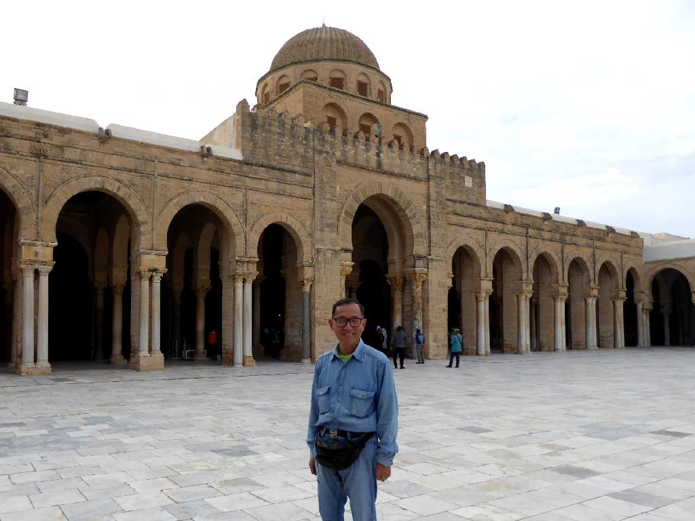

Sidi Oqba Mosque Kairouan
シディウクバモスクは６８６年に創られた北アフリカで最も古いモスクの一つ
Mihrab Sidi Oqba Mosque
７回巡礼することはメッカに巡礼することに値すると云われる聖地

November 17 2018 Sidi Oqba Mosque
１３世紀に都がチェニスに遷都されるまでイスラム教の聖都であったケロアンのシディウクバモスク